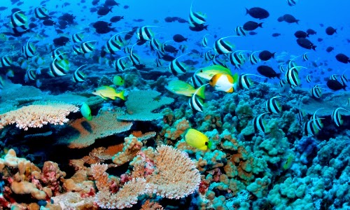
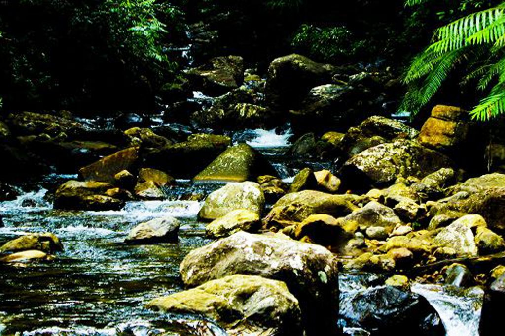
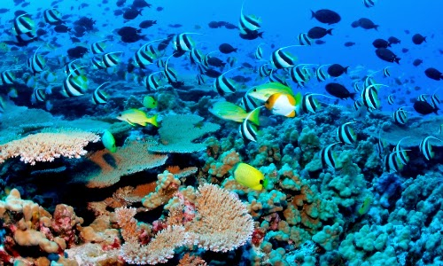
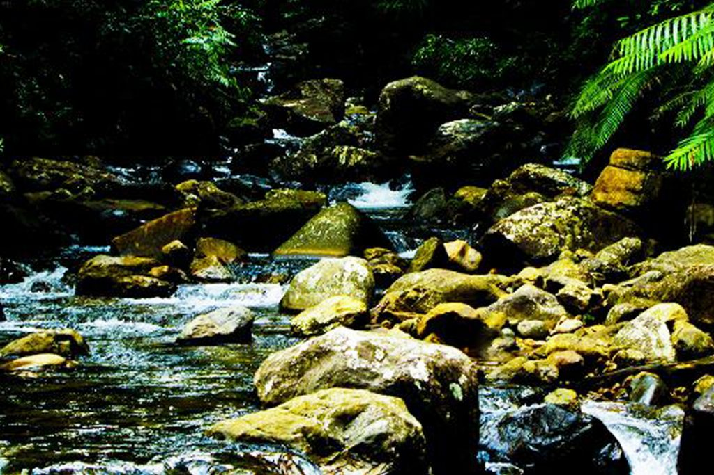

Sri Lankan Wild Life Conservation
Sri Lankan wildlife conservation stands as a testament to the nation's commitment to preserving its rich biodiversity. The island, known for its unique ecosystems and endemic species, recognizes the imperative of safeguarding its natural heritage. Through a combination of protected areas, national parks, and concerted conservation efforts, Sri Lanka endeavors to ensure the survival of diverse flora and fauna. The conservation initiatives extend beyond boundaries, engaging local communities in sustainable practices and fostering a harmonious coexistence between humans and wildlife.
Learn More

 


